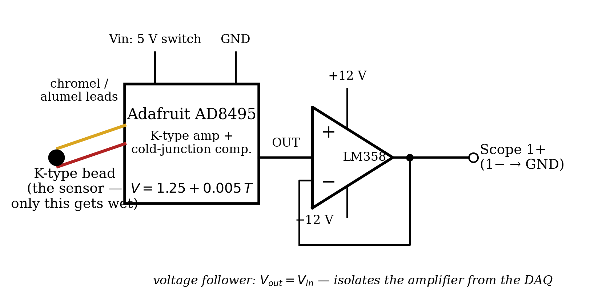
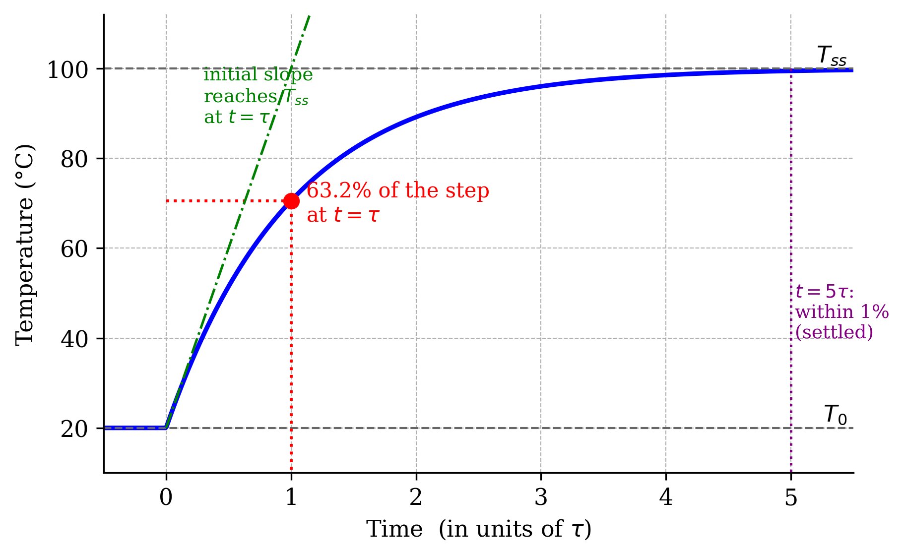
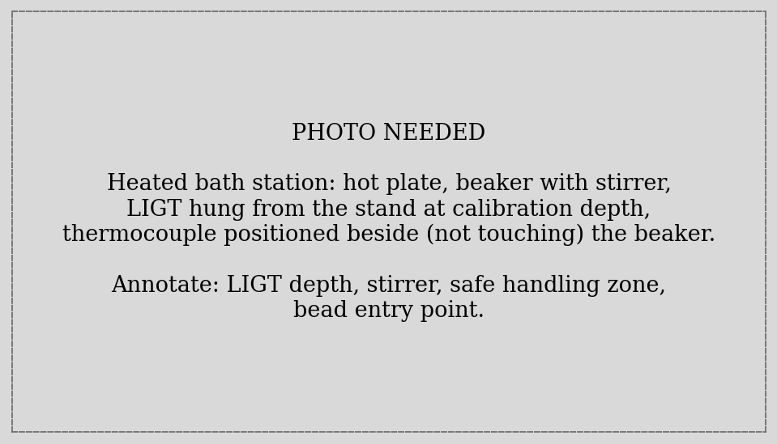
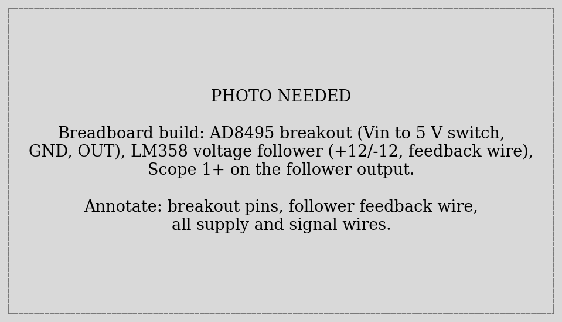
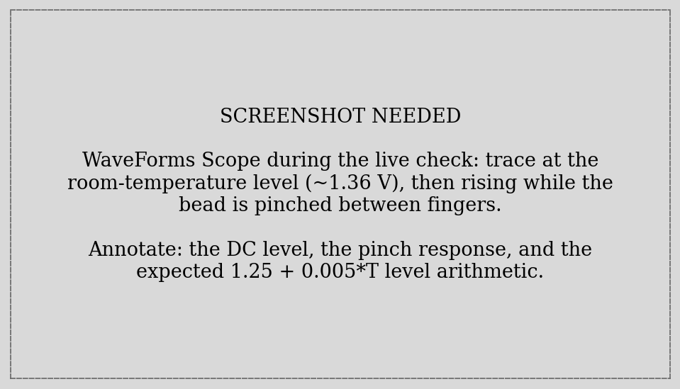
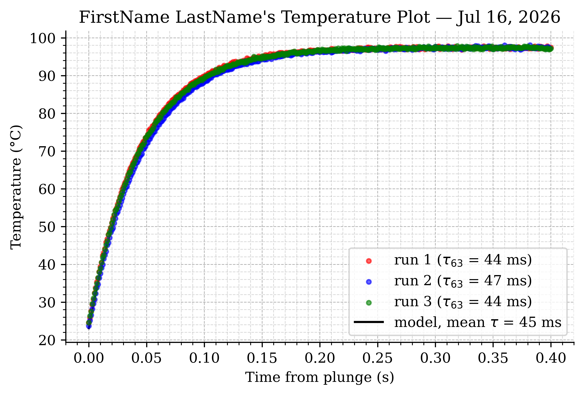
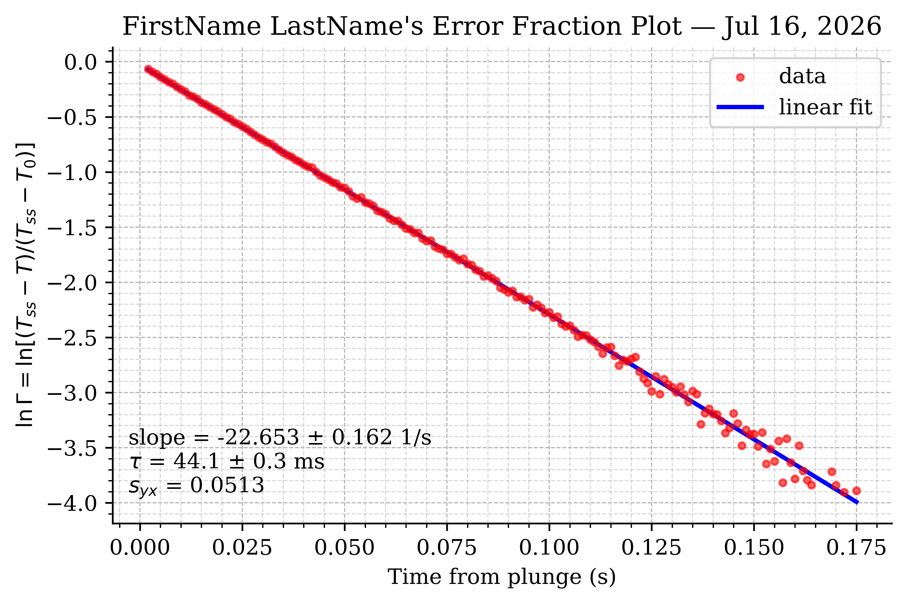

ME 3300 Experiment-08: Thermocouples and First-Order Dynamic Response
1 Learning Objective
1.1 Objectives
Your objectives for this laboratory session are to:
- Measure temperature with a K-type thermocouple and understand the signal chain that makes its microvolt output usable (Seebeck effect → cold-junction compensation → amplification → buffering)
- Perform a two-point calibration of the complete measurement chain against a liquid-in-glass thermometer, and compare it with the amplifier datasheet
- Capture the thermocouple’s step response by plunging it into a near-boiling bath — three repeated runs at 1000 Hz
- Extract the time constant \(\tau\) two independent ways: the 63.2% method and the error-fraction (log-linear) method, and reconcile them
- Use log-transform linearization to turn an exponential into a
polyfitproblem — one of the oldest and best tricks in data analysis - Judge, from your own \(\tau\), what sample rate a dynamic measurement needs — Lab 04’s lesson, now with a sensor you characterized yourself
1.2 Check Your Understanding
By the end of this lab, you should be able to answer all of these questions.
1.2.1 Hardware & Instruments
- What physical effect makes a thermocouple produce voltage, and why is cold-junction compensation required?
- What does the AD8495 output at 25 °C? (Datasheet: \(V = 1.25 + 0.005\,T\).)
- What does the voltage follower do, and — with the ADS’s 1 MΩ input — was it strictly necessary here?
- Why must only the bead enter the water?
- Why do we calibrate the whole chain against the LIGT instead of trusting the datasheet?
1.2.2 Programming
- Why does
T[10:] - T[:-10] > 5.0detect the plunge while single-samplenp.diffthresholds misfire on noise? - How does the cool-down gate (
while True+ a quick capture +break) know when the bead is ready for the next run? - What does
np.logof the error fraction accomplish, and what shape should the result have?
1.2.3 Data Analysis
- A first-order sensor reaches what fraction of a step at \(t = \tau\)? At \(t = 5\tau\)?
- Why should \(T_{ss}\) in the error-fraction method come from the LIGT rather than the tail of your data?
- Why does the \(\ln\Gamma\) scatter grow at late times?
- Your \(\tau\) is ~50 ms. Defend a sample-rate choice for measuring this sensor’s transient.
2 Pre-Lab Setup
You should come to lab having completed all tasks in this section.
2.1 Extend Your Folder Structure
Add a Lab_08 folder set to your ME3300 folder:
ME3300/
├── Lab_01/ ... Lab_06/
├── Lab_08/
│ ├── Code/
│ │ ├── Lab08_Prelab_Walkthrough.ipynb
│ │ └── FirstName_LastName_Lab08.ipynb
│ ├── Data/
│ └── Figures/No new packages are needed this week.
2.2 Read the Background Section
Read the Background section before lab. It covers the thermocouple signal chain, derives the first-order step response, and sets up both time-constant methods.
2.3 Complete the Prelab Walkthrough Notebook
Download Lab08_Prelab_Walkthrough.ipynb from Canvas into ME3300/Lab_08/Code/ and work through it before lab. It introduces this lab’s new skills on simulated first-order data:
- generating and recognizing exponential step responses (
np.exp) - the 63.2% method on noisy data
- log-transform linearization:
np.logof the error fraction, fit withpolyfit - how the choice of fit range (the \(\Gamma\) mask) moves the answer
- gap differencing (
T[10:] - T[:-10]) for robust step detection
As always, working through the prelab will allow you to answer the checkpoint questions in the Prelab quiz on Canvas before your lab session.
2.4 Python Quick Reference: New This Lab
| Task | Python command |
|---|---|
| Exponential | np.exp(-t / tau) |
| Natural log (elementwise) | np.log(Gamma) |
| Rise across a 10-sample gap | rise10 = T[10:] - T[:-10] |
| First index passing a test | np.argmax(rise10 > 5.0) (Lab 02) |
| Error fraction | Gamma = (Tss - T) / (Tss - T0) |
| Keep only the exponential range | valid = (Gamma > 0.02) & (Gamma < 0.95) (Lab 05 masks) |
| Wait for a condition (cool-down) | while True: + quick capture + break (Lab 04) |
3 Laboratory Introduction
Until now, every quantity you measured held still while you measured it. This week’s quantity moves: you will plunge a thermocouple from room-temperature air into near-boiling water and record the fastest event this course has asked you to capture — a temperature step that is 95% finished in a quarter of a second.
The scientific payload is dynamic response. No sensor reports a change instantly; the thermocouple bead must physically warm up, and the physics of that warming (a heat balance on the bead) makes it a first-order system — the simplest and most common dynamic model in measurement engineering. First-order behavior is characterized by a single number, the time constant \(\tau\), and this lab measures it twice, by two methods with very different personalities: a quick graphical read-off (the 63.2% method), and a full-data regression built on a log transform (the error-fraction method). The second method smuggles in a technique you will reuse for the rest of your career: linearizing a nonlinear model so that ordinary least squares — your trusty polyfit — can fit it.
The lab also completes a running theme. The signal chain here is the whole course in one circuit: a sensor producing microvolts (the thermocouple), a specialized amplifier fixing its famous reference-junction problem (the AD8495), a voltage follower you build from Lab 05’s op-amp golden rules, a two-point calibration of the entire chain against a trusted reference (the liquid-in-glass thermometer — hereafter LIGT), and a sample-rate decision that your own Lab 04 aliasing experiment now equips you to defend. When your measured \(\tau\) turns out to be tens of milliseconds, ask yourself what the draft plan of “log at 10 Hz” would have captured.
Safety first: this lab involves boiling water and electronics on one bench. Read the Part-1 safety notes before touching anything, and start the hot plate the moment you arrive — physics won’t hurry, and the water needs to be simmering before Part-3.
4 Background
4.1 The Thermocouple and Its Signal Chain
Join two dissimilar metal wires and the junction develops a small voltage that depends on temperature — the Seebeck effect. A K-type thermocouple (chromel–alumel) produces about 41 µV/°C: robust, fast, cheap, usable over a huge range, and far too small to read directly. Worse, the connection between the thermocouple wires and your copper circuit forms a second junction that generates its own opposing voltage — historically fixed by holding that “cold junction” in ice water. The AD8495 solves both problems on one chip: it amplifies the K-type signal and adds an electronic cold-junction compensation measured at the chip itself. Its output (per the Adafruit breakout’s datasheet) is:
\[V = 1.25 + 0.005 \, T \qquad \Longleftrightarrow \qquad T = 200\,V - 250 \tag{1}\]
with \(T\) in °C: 5 mV/°C riding on a 1.25 V offset (so temperatures below 0 °C stay above ground on a single 5 V supply).
Between the AD8495 and your DAQ sits a voltage follower (Figure 1) — Lab 05’s op-amp with its output wired straight to its inverting input. The golden rules make short work of it: \(V_- = V_+\) and \(V_- = V_{out}\), so \(V_{out} = V_{in}\), gain of exactly 1. Its job is not gain but isolation: the follower’s input draws essentially no current from the amplifier, while its output happily drives whatever is downstream. Honest note: the ADS scope input is 1 MΩ and the AD8495 could drive it directly — the follower here is a lesson more than a necessity (Q2 asks you to weigh in). It does add a few millivolts of offset (every op-amp does), and Part-3 shows why that doesn’t matter.

4.2 Why Calibrate a Pre-Calibrated Chip?
Equation 1 is the chip’s calibration. Your measurement chain is the chip plus the follower’s offset plus any supply and wiring imperfections. A two-point calibration against the LIGT — one reading in room air, one in the near-boiling bath — pins down the chain’s actual line \(T = a_1 V + a_0\). Expect \(a_1\) within a few percent of the datasheet’s 200 °C/V, and \(a_0\) a degree or so off \(-250\) — that offset is the voltage follower, measured. (Two points determine the line exactly, so there are no residuals and no fit statistics — recall Lab 03’s four-point calibration left only 2 degrees of freedom; two points leave zero. Q5 asks what a third point would buy.) One subtlety: water here does not boil at 100 °C — at this elevation it boils near 97 °C, and the LIGT, not an assumption, is your reference.
4.3 First-Order Dynamic Response
Dunk the bead (mass \(m\), specific heat \(c_p\), surface area \(A\)) into water at \(T_{ss}\). Newton’s law of cooling gives the heat balance:
\[m c_p \frac{dT}{dt} = h A \,(T_{ss} - T) \tag{2}\]
— a first-order ODE (one energy-storage element, hence first-order system). Its step response is the exponential approach:
\[T(t) = T_{ss} + (T_0 - T_{ss})\, e^{-t/\tau}, \qquad \tau = \frac{m c_p}{h A} \tag{3}\]
Figure 2 shows the anatomy. At \(t = \tau\) the response has covered \(1 - e^{-1} = 63.2\%\) of the step; by \(5\tau\) it is within 1% (settled). And Equation 3’s \(\tau\) formula predicts the physics you should expect: a smaller bead (less \(m\), relatively more \(A\)) responds faster, and a medium with better heat transfer (stirred water ≫ still air) shrinks \(\tau\) dramatically.

4.4 Two Ways to Measure \(\tau\)
Method 1 — the 63.2% read-off. Compute the crossing level directly from Equation 3:
\[T(\tau) = T_0 + 0.632\,(T_{ss} - T_0) \tag{4}\]
and find the time at which the data first crosses it. Fast and intuitive — but it uses exactly one point of your 5000, and inherits that point’s noise.
Method 2 — the error fraction. Normalize the remaining “distance to go”:
\[\Gamma(t) = \frac{T_{ss} - T(t)}{T_{ss} - T_0} = e^{-t/\tau} \quad\Longrightarrow\quad \ln \Gamma = -\frac{t}{\tau} \tag{5}\]
Taking the log turns the exponential into a straight line through the origin with slope \(-1/\tau\) — which polyfit fits using every point, with the full Lab 02 statistics attached. The transform also hands you a diagnostic for free: if \(\ln\Gamma\) vs. \(t\) is straight, the sensor really is first-order; curvature is the model complaining. Two cautions built into the method: use the LIGT value for \(T_{ss}\) (the data’s tail is noisy and slightly biased), and fit only the range where \(\Gamma\) is meaningfully between 0 and 1 — near the end, \(T_{ss} - T(t)\) is noise divided by noise, and its log scatters wildly (you will see this on your plot; it is normal and instructive).
5 Part-1: Bath and Circuit Setup
Boiling water, glass, and a hot plate share your bench today. Do not move the hot plate or beaker — ask a TA. Keep all wiring, the ADS, and your laptop on the dry side of the station. Only the thermocouple bead enters the water; leads, breadboard, and hands stay out. If anything spills, step back and call a TA before touching the electronics.
- Immediately: set up the bath per Figure 3 — beaker on the hot plate, stirrer in, LIGT hung from the stand at its calibration depth — and turn the heat on full. While it heats, build the circuit.
- Once boiling, reduce to a stable simmer with the stirrer on low. (Vigorous boiling splashes and steams; you want steady, stirred, near-boiling water.)
- Build the signal chain per Figure 1 and the photo in Figure 4: AD8495 breakout — Vin → the ADS 5 V switch, GND → GND, OUT → LM358 pin 3 (+IN); follower feedback — pin 1 (OUT) wired to pin 2 (−IN); LM358 powered from ±12 V (pins 8 and 4 — pin 4 is V−, Lab 05’s warning stands); follower output → Scope 1+ (1− → GND).
- Power up (5 V switch; ±12 V via Supplies) and verify with the DMM: the AD8495 OUT should read near \(1.25 + 0.005\,T_{room}\) (about 1.36 V in a 21 °C room), and the follower output should match its input to within a few millivolts.


Q1. Record the DMM reading at the AD8495 output and the LIGT room temperature. Does the reading match Equation 1? How many °C does any discrepancy correspond to?
Q2. Measure the follower’s input and output with the DMM and record the difference. Given the ADS scope’s 1 MΩ input, is the follower strictly necessary in this chain? Name one downstream device (from earlier labs or elsewhere) for which it would be.
6 Part-2: Watch It Live (GUI First)
- Open WaveForms → Scope, Channel 1, range ±5 V. The trace should sit at the room-temperature level.
- Pinch the bead between two fingers and watch the trace climb toward body temperature; compare Figure 5. Release and watch it fall.
- Now the preview of the main event: briefly dip just the bead into the bath and pull it out. Watch how violently fast the trace moves compared to the finger pinch.
- Close WaveForms fully.

Q3. Estimate, from the live trace, roughly how long the dip response took — tenths of a second? seconds? Now defend the manual’s choice of a 1000 Hz sample rate for Part-4 using Lab 04’s vocabulary. What would a 10 Hz log of this event look like?
7 Part-3: Calibrate the Chain (Two Points)
Open FirstName_LastName_Lab08.ipynb (starter on Canvas). Two averaged captures, each paired with a LIGT reading you take at the same moment:
import dwfpy as dwf
import numpy as np
import time
fs, duration = 50, 10.0
n = int(fs * duration)
with dwf.Device() as device:
supplies = device.analog_io # ±12 V for the follower
supplies['V+']['Voltage'].value = 12.0
supplies['V+']['Enable'].value = True
supplies['V-']['Voltage'].value = -12.0
supplies['V-']['Enable'].value = True
supplies.master_enable = True # (AD8495 runs off the 5 V switch)
time.sleep(0.5)
scope = device.analog_input
scope['ch1'].setup(range=5.0)
for name in ['Cal_RoomAir', 'Cal_Boiling']:
input(f"{name}: bead in position, LIGT read and logged? Enter...")
scope.single(sample_rate=fs, buffer_size=n, configure=True, start=True)
volts = scope['ch1'].get_data()
time_s = np.arange(n) / fs
np.savetxt(f'../Data/{name}.csv',
np.column_stack([time_s, volts]),
header='Time (s),Channel 1 (V)', delimiter=',')
print(f" {name}: mean = {volts.mean():.4f} V")For the Cal_RoomAir capture, hold the bead in still air beside the LIGT (away from the hot plate). For Cal_Boiling, submerge the bead near the LIGT bulb in the stirred bath — steady hands for ten seconds. Then the calibration itself is two-point algebra:
# LIGT readings (typed from the logbook)
T_air = 21.4 # C — room air
T_boil = 97.4 # C — near-boiling bath (elevation-corrected!)
v_air = np.loadtxt('../Data/Cal_RoomAir.csv', delimiter=',', comments='#')[:, 1].mean()
v_boil = np.loadtxt('../Data/Cal_Boiling.csv', delimiter=',', comments='#')[:, 1].mean()
# Two points define the line exactly: T = a1*V + a0
a1 = (T_boil - T_air) / (v_boil - v_air) # sensitivity (C/V)
a0 = T_air - a1 * v_air # offset (C)
print(f"v_air = {v_air:.4f} V, v_boil = {v_boil:.4f} V")
print(f"calibration: T = {a1:.2f} * V + ({a0:.2f})")
print(f"datasheet ideal: T = 200.00 * V + (-250.00) [T = (V - 1.25)/0.005]")Q4. Record both LIGT temperatures, both mean voltages, and your \(a_1\), \(a_0\). Compare with the datasheet line: how far off is the sensitivity (%)? The offset (°C)? Which circuit component explains the offset discrepancy — and why doesn’t it matter now that you’ve calibrated?
Q5. Two points leave zero degrees of freedom — the line fits perfectly by construction, so the calibration carries no self-check. What specifically would a third point (say, an ice bath at 0 °C) let you test?
8 Part-4: Three Plunges
The main event. Each run: the script confirms the bead has cooled, you position the bead in air beside the bath, press Enter, and immediately plunge the bead into the stirred bath — the capture runs 5 s at 1000 Hz.
fs, duration = 1000, 5.0 # fast! tau is only ~50 ms
n = int(fs * duration)
with dwf.Device() as device:
supplies = device.analog_io
supplies['V+']['Voltage'].value = 12.0
supplies['V+']['Enable'].value = True
supplies['V-']['Voltage'].value = -12.0
supplies['V-']['Enable'].value = True
supplies.master_enable = True
time.sleep(0.5)
scope = device.analog_input
scope['ch1'].setup(range=5.0)
for run in [1, 2, 3]:
# cool-down gate: wait until the bead is back near room temp
while True:
scope.single(sample_rate=100, buffer_size=100,
configure=True, start=True)
T_now = a1 * scope['ch1'].get_data().mean() + a0
if T_now < T_air + 3.0:
break
print(f" bead still at {T_now:.1f} C — keep cooling...")
time.sleep(5)
input(f"Run {run}: bead in air beside the bath. Press Enter, "
"then IMMEDIATELY plunge (capture runs 5 s)...")
scope.single(sample_rate=fs, buffer_size=n, configure=True, start=True)
volts = scope['ch1'].get_data()
time_s = np.arange(n) / fs
np.savetxt(f'../Data/Plunge_{run:02d}.csv',
np.column_stack([time_s, volts]),
header='Time (s),Channel 1 (V)', delimiter=',')
print(f" saved Plunge_{run:02d}.csv "
f"(end T = {a1*volts[-500:].mean()+a0:.1f} C)")The cool-down gate is Lab 04’s while True + break doing real work: a quick 1-second capture reads the current bead temperature through your own calibration, and the loop refuses to proceed until the bead is within 3 °C of room temperature — automating the old “wait, is it cool yet?” guesswork. Record the LIGT bath temperature at each run.
Judge each run by its plot immediately (a quick plt.plot cell after each capture is smart):
- A hump before the main rise — the bead crossed the steam on its way in. Small humps are tolerable (your detector will ignore them; keep the entry quick and from the side). A large slow ramp before the step means too much steam: ask a TA to top up the water.
- A ragged, stepped rise — the bead wasn’t fully submerged, or touched the beaker wall. Keep the bead a couple of centimeters deep, mid-water, not touching glass.
- A run that starts warm (initial level well above room) — the bead didn’t finish cooling; the gate prevents this if you let it.
Repeat any run that fails — three clean runs is the goal, not three attempts.
Q6. Record the LIGT bath temperature at each run and note anything unusual you saw in each capture (humps, ragged sections). Which runs are keepers?
Q7. Each capture is 5000 samples for an event that’s over in ~0.25 s. Why record 5 s at all — what do the long pre-step and post-step stretches provide for the analysis in Parts 5–6?
9 Part-5: Time-Shift and the 63.2% Method
Each run’s plunge happened at a different (human-timed) moment, so first find it, precisely, in each record:
def analyze_run(fname):
"""Load a plunge capture; return shifted (t, T), T0, Tss, tau63."""
d = np.loadtxt(fname, delimiter=',', comments='#')
T_full = a1 * d[:, 1] + a0 # volts -> C via YOUR calibration
t_full = d[:, 0]
T0 = T_full[:1000].mean() # early window: pre-plunge, pre-steam
# Detect the plunge: a >5 C rise across 10 samples (10 ms) can only be
# the step — noise (~0.2 C) and steam preheat (~1.5 C, slow) can't do it.
rise10 = T_full[10:] - T_full[:-10]
idx = np.argmax(rise10 > 5.0)
idx += np.argmax(T_full[idx:idx + 10] > T0 + 1.0) # refine: the takeoff
t = t_full[idx:] - t_full[idx] # t = 0 at the plunge
T = T_full[idx:]
Tss = T[-1000:].mean() # settled end of record
T63 = T0 + 0.632 * (Tss - T0) # Eq. 4
tau63 = t[np.argmax(T >= T63)]
return t, T, T0, Tss, tau63
runs = [analyze_run(f'../Data/Plunge_{i:02d}.csv') for i in [1, 2, 3]]
taus = np.array([r[4] for r in runs])
print("run | T0 (C) | Tss (C) | tau63 (ms)")
for i, (t, T, T0, Tss, tau63) in enumerate(runs, start=1):
print(f" {i} | {T0:6.1f} | {Tss:6.1f} | {tau63*1000:6.1f}")
print(f"\nmean tau63 = {taus.mean()*1000:.1f} ms")The detector deserves a close look, because it is a designed detector in the Lab 02/03 tradition:
T_full[10:] - T_full[:-10]— Lab 06’s shifted-slices trick, now as gap differencing: the rise across a 10-sample (10 ms) window. During the step the bead climbs ~15 °C in 10 ms; sensor noise (~0.2 °C) and the slow steam preheat (~1.5 °C over 300 ms) cannot come close to the 5 °C threshold. Compare a naive single-samplenp.diff(T) > 0.5: with 0.2 °C of noise on each sample, that threshold false-fires somewhere in 5000 samples nearly every run. Widening the window grows the signal while the noise stays put — the same design-against-noise lesson as Lab 02’s release detector, one tool stronger.- The refine line then locates the takeoff within the detected window (first sample 1 °C above \(T_0\)), so \(t = 0\) lands within about a millisecond of the true plunge.
- The list comprehension
[analyze_run(...) for i in [1, 2, 3]]runs the whole analysis on all three files in one line —defonce, loop the calls (Lab 05’s pattern, compacted).
Build the three-run figure to match Figure 6 — all runs time-shifted to \(t = 0\), focused on the transient, each run’s \(\tau_{63}\) in the legend, and the first-order model at the mean \(\tau\) overlaid. Format per Post-Lab; save .pdf/.png at 600 DPI.
Q8. Copy the printed \(\tau\) table. How repeatable are your three time constants (spread as % of the mean)? What differs physically between runs — plunge speed, depth, path through the steam?
Q9. Run 2’s capture (if you caught steam) shows a small hump before the step. Explain, with numbers, why the gap-difference detector didn’t fire on it.
9.1 Example Result

10 Part-6: The Error-Fraction Method
Pick your cleanest run. The error fraction (Equation 5) uses every sample of the transient, and the log transform makes the fit linear:
from scipy import stats
t, T, T0, Tss_data, tau63 = runs[0] # best run
Tss = T_boil # LIGT value — the reference
Gamma = (Tss - T) / (Tss - T0) # error fraction (Eq. 5)
valid = (Gamma > 0.02) & (Gamma < 0.95) # the exponential range only
t_v = t[valid]
ln_Gamma = np.log(Gamma[valid])
coeffs = np.polyfit(t_v, ln_Gamma, 1) # ln(Gamma) = -t/tau
slope = coeffs[0]
tau_ef = -1.0 / slope
N = np.count_nonzero(valid)
nu = N - 2
resid = ln_Gamma - np.polyval(coeffs, t_v)
s_yx = np.sqrt(np.sum(resid**2)) / np.sqrt(nu)
S_m = s_yx / np.sqrt(np.sum((t_v - t_v.mean())**2))
CI_m = stats.t.ppf(0.975, df=nu) * S_m
# propagate slope CI into tau (tau = -1/slope -> u_tau/tau = u_slope/|slope|)
CI_tau = tau_ef * CI_m / abs(slope)
print(f"slope = {slope:.3f} ± {CI_m:.3f} 1/s (95% CI), N = {N}")
print(f"tau (error fraction) = {tau_ef*1000:.1f} ± {CI_tau*1000:.1f} ms")
print(f"tau (63.2%, same run) = {tau63*1000:.1f} ms")np.logis the whole linearization: after it, the exponential model is a line and everything you know about line fitting — including all the Lab 02 statistics — applies verbatim. This transform-then-fit move works whenever a model can be algebraically straightened (exponentials, power laws vianp.log10of both axes, Arrhenius plots…); keep it in your pocket.- The mask matters.
Gamma > 0.02cuts the region where \(T_{ss} - T\) is smaller than the noise (its log is garbage — you’ll see the scatter fan out on your plot right at the cut);Gamma < 0.95trims the entry transient. Q11 has you move these limits and watch the fitted \(\tau\) respond — the same fit-what-the-model-describes discipline as Lab 05’s saturation mask. - The last two lines are Lab 06 in action: the slope’s CI propagates into \(\tau\)’s CI by the derivative rule for \(\tau = -1/\text{slope}\) (relative uncertainties are equal for a \(x^{-1}\) relationship — a one-variable power rule).
Build the error-fraction figure to match Figure 7. Format per Post-Lab; save .pdf/.png at 600 DPI.
Q10. Report \(\tau_{ef} \pm\) CI and \(\tau_{63}\) for the same run. Do they agree? Which estimate do you trust more, and on what grounds (how many data points back each one)?
Q11. Re-run the fit with the mask changed to (Gamma > 0.001) & (Gamma < 0.99). What happens to the fitted \(\tau\) and to \(s_{yx}\)? Explain using what \(\ln\Gamma\) looks like near the end of the record.
Q12. Is your \(\ln\Gamma\) plot straight over the fitted range? What does its straightness (or curvature) say about modeling the bead as a first-order system?
10.1 Example Result

11 Post-Lab Assignment
Upload your submissions to Canvas. Post-labs are due Mondays at 10:00 pm. A full example solution notebook is posted after all sections have met; check your approach against it, but submit your own work.
11.1 Submission Items
- Your final .ipynb notebook (
FirstName_LastName_Lab08.ipynb), restarted and run top-to-bottom (acquisition cells may show their saved outputs) - Step response plot (three runs), .pdf
- Error fraction plot (best run), .pdf
- Answers to the post-lab questions on Canvas
11.2 Step Response Plot Requirements
- Figure size: 6.5” wide × 4.0” tall; white background; Times font, 10–12 pt
- All three runs, time-shifted so each plunge is at \(t = 0\); scatter markers size 10, one color per run, in the legend with each run’s \(\tau_{63}\)
- The first-order model (Equation 3) at the mean \(\tau\) overlaid as a black line, in the legend
- x-limits focused on the transient (a little pre-step, through clear settling); major and minor grids; top/right spines removed
- Axis labels with units; title “FirstName LastName’s Temperature Plot” with the date
11.3 Error Fraction Plot Requirements
- Figure size: 6.5” wide × 4.0” tall; white background; Times font, 10–12 pt
- \(\ln\Gamma\) vs. time: red scatter markers size 10; the linear fit as a solid blue 2 pt line
- Major and minor grids; top/right spines removed; legend clear of the data
- Axis labels (the y-label should state the definition of \(\Gamma\)); title “FirstName LastName’s Error Fraction Plot” with the date
ax.textannotation: slope ± CI, \(\tau \pm\) CI (ms), and \(s_{yx}\)
11.4 Post-Lab Questions
- Report all four numbers: \(\tau_{63}\) for each run, and \(\tau_{ef} \pm\) CI for your best run. Are they consistent?
- Your sensor settles (within 1%) in \(5\tau\). A control system reads this thermocouple after a sudden process change — how long must it wait before trusting the reading? Show the arithmetic from your measured \(\tau\).
- Using \(\tau = mc_p/(hA)\): qualitatively, how would \(\tau\) change for (a) a bead twice the diameter, and (b) the same bead in still air instead of stirred water? Which factor changes in each case?
- Lab 04 taught you to choose sample rates against the signal’s content. An exponential with \(\tau = 45\) ms has significant frequency content out to roughly \(f \approx 1/(2\pi\tau)\) and beyond. Evaluate: was 1000 Hz overkill, adequate, or marginal? Would 50 Hz have been defensible?
- In Part-6 you used the LIGT for \(T_{ss}\) rather than the tail of your data. Suppose you had used the data tail and it sat 0.5 °C below the true bath temperature. Sketch (in words) what happens to \(\ln\Gamma\) at late times, and which direction the fitted \(\tau\) moves.
12 Before You Leave
- Hot plate off first; let the water cool before anyone moves the beaker (TA handles it).
- Master Enable and the 5 V switch off before rewiring; the AD8495 breakout and LM358 back to their containers, pins unbent; thermocouple dried gently and returned.
- Show your step-response plot to a TA before teardown — a failed run costs two minutes now and a week later.
- Confirm your data files have synced to OneDrive (check on a second device) and that both partners have everything.
- Clean the station (wipe any water spots), collect your belongings, and log off.